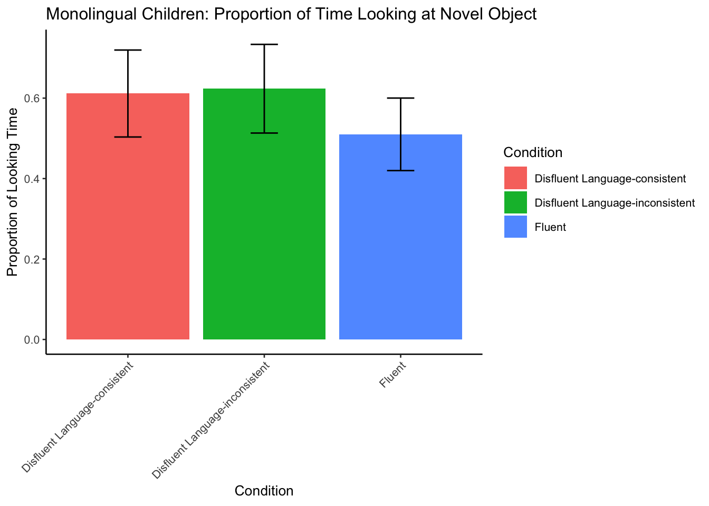

The paper that was re-analyzed the paper entitled “Uh and euh signal novelty for monolinguals and bilinguals: evidence from children and adults” by Elizabeth Morin-Lessard and Krista Byers-Heinlein (doi: 10.1017/S0305000918000612)
library(eyetrackingR)
library(ez)
library(tidyverse)
library(effsize)
library(dplyr)
library(xtable)
library(apaTables)
##setwd("~/Documents/GITHUB/Znathani-Honors-Project")
monolingual_children_data_1 <- read_csv("monolingual_children_data_2.csv")Always the first function used with eyetrackingr - Convert raw data for use in eyetrackingR
data <- make_eyetrackingr_data(monolingual_children_data_1,
participant_column = "subject",
trial_column = "media.name",
time_column = "trial.timestamp",
trackloss_column = "trackloss",
aoi_columns = c('look.novel','look.familiar'),
treat_non_aoi_looks_as_missing = TRUE)Look only at the data in the time frame of interest- 2 seconds before the onset of the target words and shifted over 250 ms to allow for initiation of eye movement, as mentioned in the paper
response_window <- subset_by_window(data,
window_start_time = 13250,
window_end_time = 15250, rezero = FALSE, remove=TRUE)Data should be removed if the eyetracker lost track of it for too long details on trial proportion threshhold not given in paper, value chosen based on my judgement
data_clean <- clean_by_trackloss(response_window,
trial_prop_thresh = .5,
)Gives proportion that can be used as dependent variable in ANOVA
response_window_agg_by_subject <- make_time_window_data(data= data_clean,
aois = c("look.novel"),
predictor_columns=c("trial.type", "target.type"),
summarize_by = c("subject", "media.name")) %>%
group_by(subject) %>%
mutate(trial.number = 1:n())ANOVA
monolingual_analysis <- ezANOVA(
data = response_window_agg_by_subject
, dv = .(Prop)
, wid = subject
, within = .(trial.type)
, type = 3
, return_aov = TRUE
)Print ANOVA Results in Table
DataTable <- apa.ezANOVA.table(monolingual_analysis, table.title = "ANOVA Output")
print(DataTable)##
##
## ANOVA Output
##
## Predictor df_num df_den Epsilon F p ges
## trial.type 1.89 58.73 0.95 4.80 .013 .07
##
## Note. df_num indicates degrees of freedom numerator. df_den indicates degrees of freedom denominator.
## Epsilon indicates Greenhouse-Geisser multiplier for degrees of freedom,
## p-values and degrees of freedom in the table incorporate this correction.
## ges indicates generalized eta-squared.
## T-tests
CollapsedInSubject <- make_time_window_data(data_clean,
aois = c("look.novel"),
predictor_columns=c("trial.type"),
summarize_by = c("subject")) %>%
group_by(subject) %>%
mutate(trial.num.cons = 1:n())
DataForTtest <- spread(CollapsedInSubject, trial.type, Prop)
DataForTtest <- DataForTtest %>%
group_by(subject) %>%
summarise_all(funs(max(., na.rm = TRUE)))Paired sample T test for Trial Type - Fluent vs Language Consistent Disfluency
t.test(DataForTtest$"Fluent", DataForTtest$"Disfluent Language-consistent",paired=TRUE) ##
## Paired t-test
##
## data: DataForTtest$Fluent and DataForTtest$"Disfluent Language-consistent"
## t = -2.5196, df = 31, p-value = 0.01712
## alternative hypothesis: true difference in means is not equal to 0
## 95 percent confidence interval:
## -0.18355410 -0.01932894
## sample estimates:
## mean of the differences
## -0.1014415Finding means and standard deviations
mean(DataForTtest$Fluent) ## [1] 0.5100026sd(DataForTtest$Fluent) ## [1] 0.1718552mean(DataForTtest$"Disfluent Language-consistent") ## [1] 0.6114441sd(DataForTtest$"Disfluent Language-consistent") ## [1] 0.2125258cohen.d(DataForTtest$"Disfluent Language-consistent",DataForTtest$"Fluent",pooled=TRUE,paired=TRUE)##
## Cohen's d
##
## d estimate: 0.4454076 (small)
## 95 percent confidence interval:
## lower upper
## -0.06049375 0.95130898Paired sample T test for Trial Type - Fluent vs Language Inconsistent Disfluency
t.test(DataForTtest$"Fluent", DataForTtest$"Disfluent Language-inconsistent",paired=TRUE) ## Sig.##
## Paired t-test
##
## data: DataForTtest$Fluent and DataForTtest$"Disfluent Language-inconsistent"
## t = -2.4529, df = 31, p-value = 0.02
## alternative hypothesis: true difference in means is not equal to 0
## 95 percent confidence interval:
## -0.20770156 -0.01911104
## sample estimates:
## mean of the differences
## -0.1134063cohen.d(DataForTtest$"Disfluent Language-inconsistent",DataForTtest$"Fluent",pooled=TRUE,paired=TRUE)##
## Cohen's d
##
## d estimate: 0.4336096 (small)
## 95 percent confidence interval:
## lower upper
## -0.07197167 0.93919092## Mean and standard deviation for Fluent Trials already found above
mean(DataForTtest$"Disfluent Language-inconsistent") ## [1] 0.6234089sd(DataForTtest$"Disfluent Language-inconsistent") ## [1] 0.2009359Paired sample T test for Trial Type - Language Consistent vs Language Inconsistent Disfluency
t.test(DataForTtest$"Disfluent Language-consistent", DataForTtest$"Disfluent Language-inconsistent",paired=TRUE)##
## Paired t-test
##
## data: DataForTtest$"Disfluent Language-consistent" and DataForTtest$"Disfluent Language-inconsistent"
## t = -0.31042, df = 31, p-value = 0.7583
## alternative hypothesis: true difference in means is not equal to 0
## 95 percent confidence interval:
## -0.09057441 0.06664485
## sample estimates:
## mean of the differences
## -0.01196478cohen.d(DataForTtest$"Disfluent Language-inconsistent",DataForTtest$"Disfluent Language-consistent",pooled=TRUE,paired=TRUE)##
## Cohen's d
##
## d estimate: 0.05487578 (negligible)
## 95 percent confidence interval:
## lower upper
## -0.4449611 0.5547127 ## Mean and standard deviation for Disfluency Trials already found above Graph of the results
descriptive_df <- CollapsedInSubject %>%
group_by(trial.type) %>%
summarise(means= mean(Prop),
SEs = mean(Prop)/sqrt(length(Prop)))
ggplot(descriptive_df, aes(x=trial.type, y=means))+
geom_bar(stat="identity", aes(fill=trial.type))+ # add means
geom_errorbar(aes(ymin=means-SEs, # add error bars
ymax=means+SEs), width=.2) +
ylab("Proportion of Looking Time") +
xlab("Condition") +
labs(fill="Condition")+
ggtitle("Monolingual Children: Proportion of Time Looking at Novel Object") +
theme_classic(base_size =10) +
theme(axis.text.x = element_text(angle = 45, hjust = 1))
The data was submitted to a one-way repeated measures ANOVA with the independent variable of Trial type (of the three levels: Fluent, Disfluent Language-consistent, and Disfluent Language-Inconsistent), and the dependent variable as proportion of looking towards the at the novel object. The results of the ANOVA indicated a significant main effect of Trial type F(1.89, 58.73) = 4.80, p=.013. Follow up paired sample t-tests were conducted and showed that the monolingual subjects had a significantly lower proportion of time looking to the novel object in the Fluent trials (M= .51, SD= .17) compared to the Disfluent Language-consistent trials (.61, .21) with t(31)=-2.5196, p= .017, d= .45. Furthermore, monolingual subjects also had a significantly lower proportion of time looking to the novel object in the Fluent trials compared to the Disfluent Language-inconsistent trials (M= .62, SD= .20) with t(31) = -2.4529, p= .02, d=.43. Finally, the t-test between the two Disfluent conditions (Disfluent Language-Consistent and Dislfluent Language-Inconsistent) indicated no significant difference eith t(31) = -0.310, p= .758 and d= .05.
In reproducing the original analysis from the paper in regards to the first ANOVA conducted as Part of Study 1 on monolinguals, I was able to benefit from the R scripts made publicly available by the researchers. Using the guide of the original R-scripts that were used to conduct the analysis in the paper, I went through the re-organization and cleaning of the data in order to produce data that could then be analyzed by ANOVA and the follow up t-tests. Although I had the availability of the researcher’s R scripts, I tried to use that as a guide only in terms of the packages and functions that they used, and would then search through the documentation of the function to understand all the different arguments taken by the function, what the function was, and why it was used. I also referenced it whenever I came acrosss errors in my own code. For the most part, I was able to reproduce the analysis conducted in the paper, in that my ANOVA also had similar results that indicated a main effect of condition, and my t-tests also pointed towards the same conclusions. Although the numbers were slightly different, I believe my cleaning of the data was slightly different than theirs, which may have effected all subsequent analysis. Because the gaze of the participants was followed by an eye tracker, the cleaning of the data consisted of removing trials in which there was a significant amount of trackloss. The original R script used a specific cut-off which was not thoroughly explained in either the data, R-script or paper (so I believe), and therefore I used my own arbitrary cut-off that resulted in a different number of trials being removed and thus a slightl different set of data being used for the subsequent analysis. For the most part however, the differences between my results and the original results were not entirely different. One part of analysis that I did not see in the R-script but that was present in the paper was the effect size (d) of each of t -tests. Therefore, I used a function I thought best fit for this purpose and easiest to use to get my results, and found there to be the most noticeable difference between my effect sizes and the effect sizes reported in the paper, although relatively the numbers were not extremely different (d=.45 vs .52 ,d=.43 vs .59, d=.05 vs .05, where the first numbers are from my analysis and second number is from the paper). Overall, I believe I was able to successfully replicate this ANOVA and its follow up tests.